Data visualisation
Stuart Demmer
03 August 2018
Making figures - the cool part :D
Alright - so here we are! Finally getting into the swing of things and getting some neat outputs. You might have noticed that I left a little sneak peak at what it takes to make graphs in R in the previous section. It might have all looked a bit strange but there really is very little to it all. R has two main plotting methods - there is plot() which comes as a basic funciton in R. And then there is ggplot2 - this is a massive improvement over plot(). It stands for the grammar of graphics which allows you to build almost any kind of graph you can imagine! Right, so now that we have all that out the way we will need to load the tidyverse again:
library(tidyverse)And if you get an error saying that “there is no package called ‘tidyverse’” you’ll need to go:
install.packages("tidyverse")
library(tidyverse)The package contained within tidyverse is ggplot2. Now that the formalities are out the way let’s get cracking. We’ll be using a pretty neat data set which is called eco_foot (ecological footprint) which contains the ecological impact that 162 countries have on the environment:
eco_foot## # A tibble: 162 x 20
## country region pop hdi gdpc cropf grazf forestf carbonf fishf
## <chr> <chr> <dbl> <dbl> <chr> <dbl> <dbl> <dbl> <dbl> <dbl>
## 1 Afghani~ Middle Ea~ 29.8 0.46 $614~ 0.3 0.2 0.08 0.18 0
## 2 Albania Northern/~ 3.16 0.73 $4,5~ 0.78 0.22 0.25 0.87 0.02
## 3 Algeria Africa 38.5 0.73 $5,4~ 0.6 0.16 0.17 1.14 0.01
## 4 Angola Africa 20.8 0.52 $4,6~ 0.33 0.15 0.12 0.2 0.09
## 5 Argenti~ Latin Ame~ 41.1 0.83 $13,~ 0.78 0.79 0.290 1.08 0.1
## 6 Armenia Middle Ea~ 2.97 0.73 $3,4~ 0.74 0.18 0.34 0.89 0.01
## 7 Austral~ Asia-Paci~ 23.0 0.93 $66,~ 2.68 0.63 0.89 4.85 0.11
## 8 Austria European ~ 8.46 0.88 $51,~ 0.82 0.27 0.63 4.14 0.06
## 9 Azerbai~ Middle Ea~ 9.31 0.75 $7,1~ 0.66 0.22 0.11 1.25 0.01
## 10 Bahamas Latin Ame~ 0.37 0.78 $22,~ 0.97 1.05 0.19 4.46 0.14
## # ... with 152 more rows, and 10 more variables: tef <dbl>, crop <dbl>,
## # graz <dbl>, forest <dbl>, fish <dbl>, urban <dbl>, tbc <dbl>,
## # bcdr <dbl>, er <dbl>, cr <dbl>From that print out we can see a whole load of information. The column names are:
country = “Country”, region = “Region”, pop = “Population (millions)”, hdi = “HDI”, gdpc = “GDP per Capita”, cropf = “Cropland Footprint”, grazf = “Grazing Footprint”, forestf = “Forest Footprint”, carbonf = “Carbon Footprint”, fishf = “Fish Footprint”, tef = “Total Ecological Footprint”, crop = “Cropland”, graz = “Grazing Land”, forest = “Forest Land”, fish = “Fishing Water”, urban = “Urban Land”, tbc = “Total Biocapacity”, bcdr = “Biocapacity Deficit or Reserve”, er = “Earths Required”, cr = “Countries Required”
Creating a ggplot
To plot eco_foot run this code to make a scatter plot (what ggplot calls a point plot for conciseness) with crop on the x-axis and cropf on the y-axis:
ggplot(data = eco_foot) +
geom_point(mapping = aes(x = crop, y = cropf))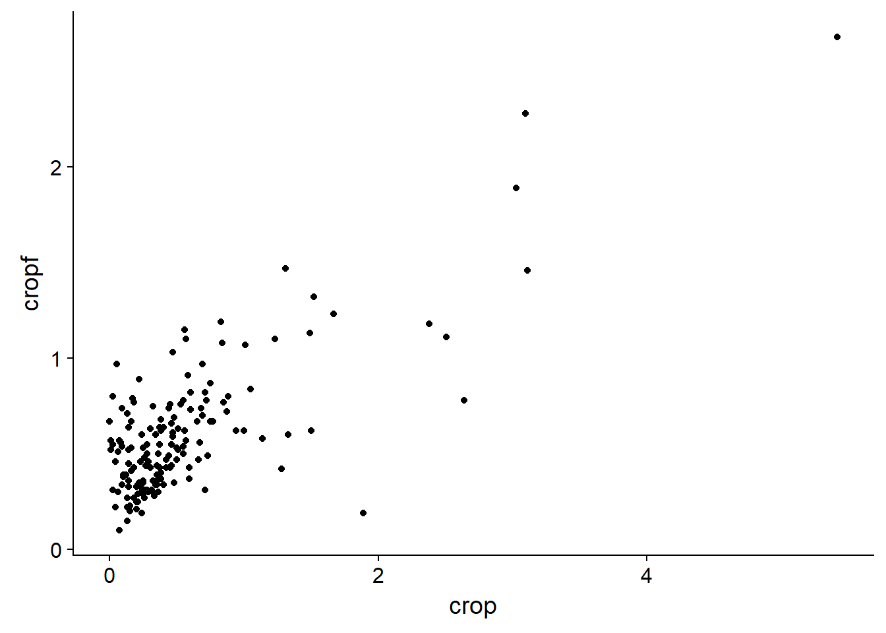
This figure is a little scrunched up so lets log the data and see what we get then:
ggplot(data = eco_foot) +
geom_point(mapping = aes(x = log(crop), y = log(grazf)))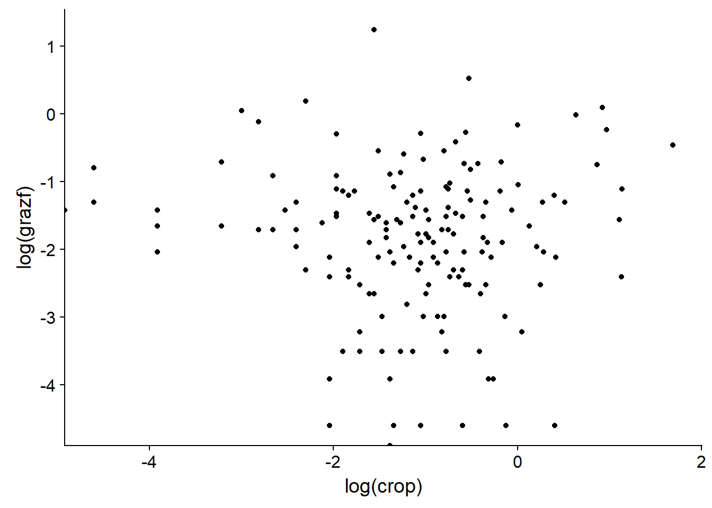
Pretty smart hey? As you increase in cropping area your ecological footprint resulting from your cropping activities seems to increase too. It even changes your axis labels :) - we can make them even better later but first let’s unpack what’s going on. With ggplot2 we use the ggplot() function which creates a coordinate system which we can add layers to. The first argument of ggplot() is the dataset that we will use in the graph so ggplot(data = eco_foot) tells ggplot where to get the data from. But that’s it - nothing more, nothing less. It’s not a very interesting graph in that form. To sort that out we need to add a layer - that’s where geom_point() comes in. There are many “geoms” in ggplot2 and their job is to add data to your figure in layers. geom_point() adds data in a point (or scatter plot) manner. So ggplot now knows where to get the data from and what kind of graph to produce but it doesn’t quite know what variables to plot and on which axes. That’s what the mapping argument does. It tells ggplot how to “map” the data onto the graph coordinates. mapping is always paired with aes() and the x and y arguments of aes() specify which variables to map to the x and y axes of your figure. geom_... looks for the variables to map from the data argument in ggplot() which in our case happens to be eco_foot.
A graphing template
So from this little description we can make a basic template of what each graph needs in it’s simplest form:
ggplot(data = <DATA>) +
<GEOM_FUNCTION>(mapping = aes(<MAPPINGS>))Our goal in this session is to understand and expand this template to achieve whatever graph we might want.
Quiz time
- What happens if you run
ggplot(data = eco_foot)?- Make a scatter plot of
log(crop)vslog(tbc).- Is a scatterplot of
tbcvsregionuseful? Why?
Aesthetic mappings
In the plot below there doesn’t appear to be any real relationship between population and the human development index but we know that there are some pretty big countries in specific regions of the world and there are some pretty destitute countries in other parts of the world…
ggplot(data = eco_foot) +
geom_point(aes(x = log(pop), y = hdi))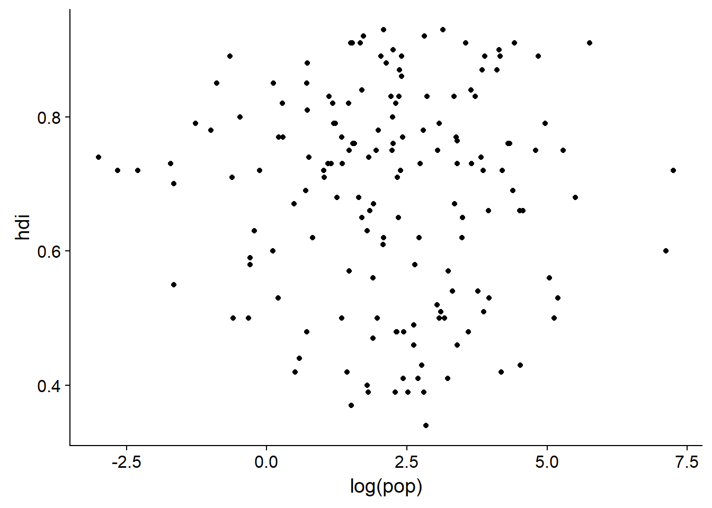
This simple plot doesn’t really tell the reader much and we could be hiding some very interesting trends in here. Now our dataset contains a whole bunch of information within different variables and depending on the type of data a variable represents we can choose different aesthetics. Three simple aesthestics that we can plot are:
* size - this handles continuous data * shape - this handles categorical data * colour - this handles both categorical and continuous data We can convey additional information to the reader by mapping aesthetics in our plots to variables in our dataset to learn a little more about the locations of countries in our previous plot.
ggplot(data = eco_foot) +
geom_point(aes(x = log(pop), y = hdi, colour = region))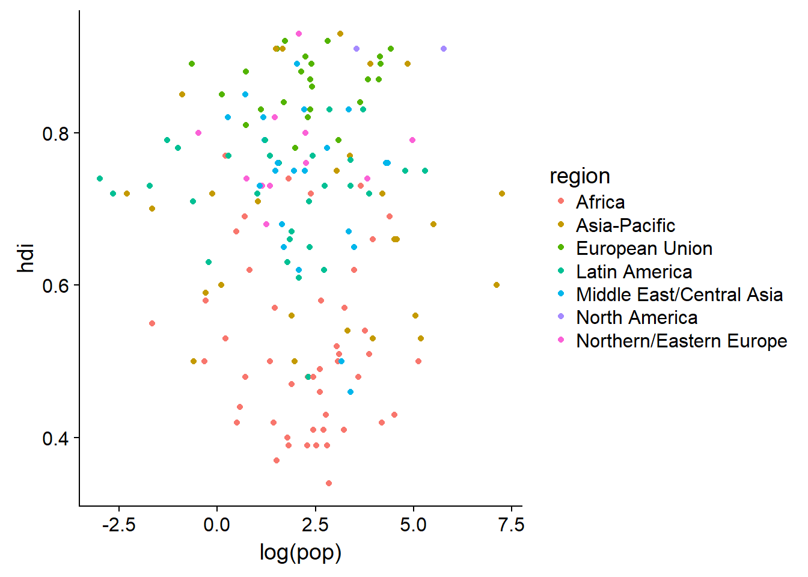
That’s a bit of a better description for our reader. What’s going on in the background here is that ggplot automatically assigns a level (if there isn’t one already assigned to our variable) in ascending order of alphanumeric starting characters. ggplot then adds a colour to each level from a “colour palette” and then prints out a neat legend to tell the reader what level each colour is representing.
In this example we logically chose to map colour to region but we could just as easily mapped size to region:
ggplot(data = eco_foot) +
geom_point(aes(x = log(pop), y = hdi, size = region))## Warning: Using size for a discrete variable is not advised.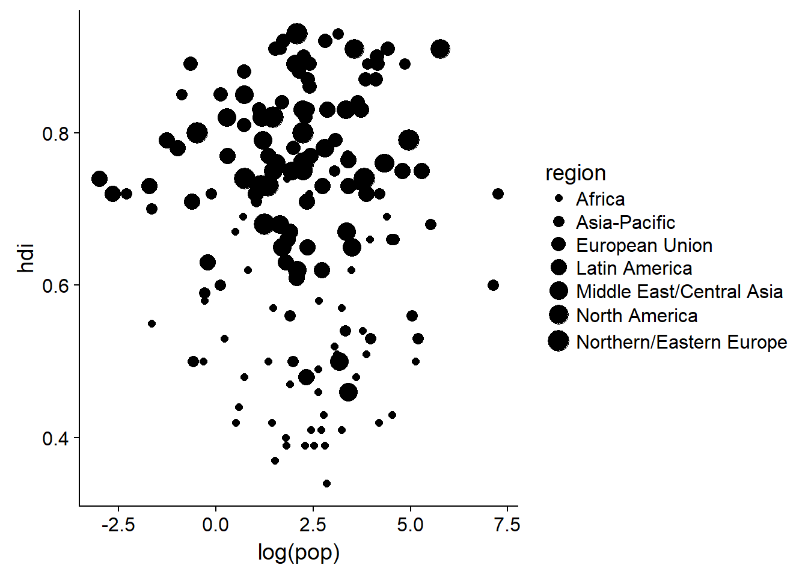
But notice the rather handy warning that ggplot prints out for us suggesting that mapping size to region is not a goot idea because region is a discrete variable rather than continuous. A better option would be to map shape to region:
ggplot(data = eco_foot) +
geom_point(aes(x = log(pop), y = hdi, shape = region))## Warning: The shape palette can deal with a maximum of 6 discrete values
## because more than 6 becomes difficult to discriminate; you have 7.
## Consider specifying shapes manually if you must have them.## Warning: Removed 11 rows containing missing values (geom_point).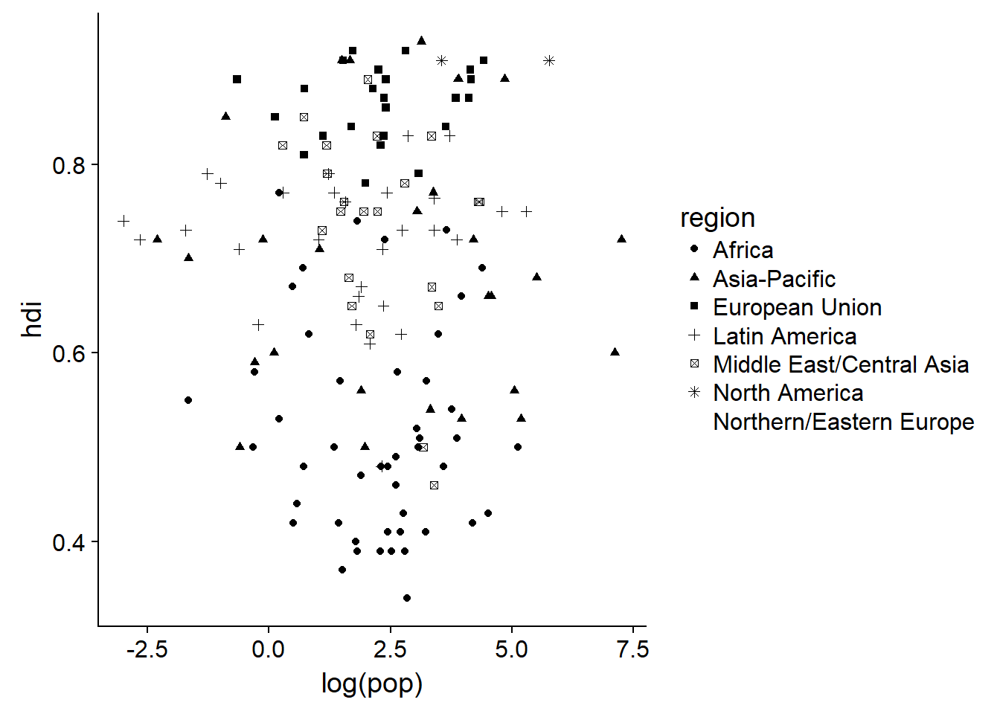
This is a little better but notice the warning message again. This time it’s becuase there are too many categories within region and so it stops it at six categories because anthing more than that would become a little challenging to discern. Once you’ve mapped your aesthetics ggplo2 takes care of the rest - it automatically scales the axes and produces the legend. It selects reasonable axis tick mark intervals. But many of these can be overridden. For example, we can make the colour of our points purple:
ggplot(data = eco_foot) +
geom_point(aes(x = log(pop), y = hdi), colour = "purple")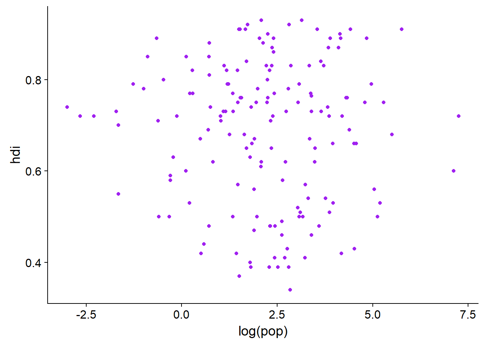
ggplot2 accepts a wide variety of general colour names so you will probably get the colour you want most of the time. You can also set the shape of the points:
ggplot(data = eco_foot) +
geom_point(aes(x = log(pop), y = hdi), shape = 15)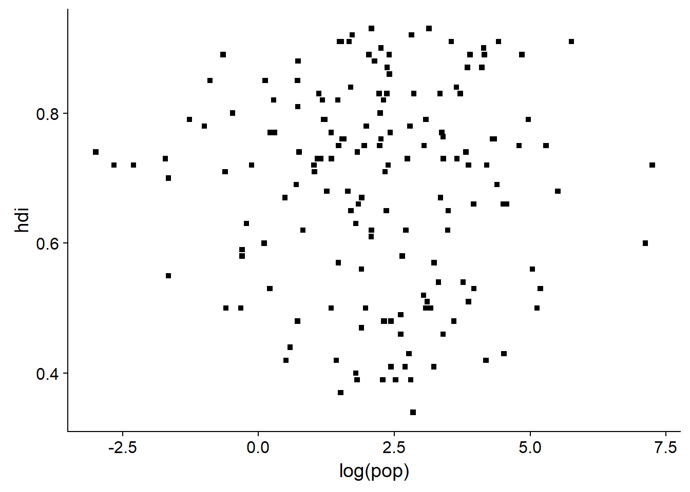
But here we, unfortunately, cannot write out “square”, we need to use a number which the shape is linked to. But also notice where the argument call goes in geom_point(). That is very important. Colour inside and colour outside aes() are very different things.
Quiz time
- What is wrong with the following code:
ggplot(data = eco_foot) + geom_point(mapping = aes(x = log(pop), y = hdi, colour = "blue"))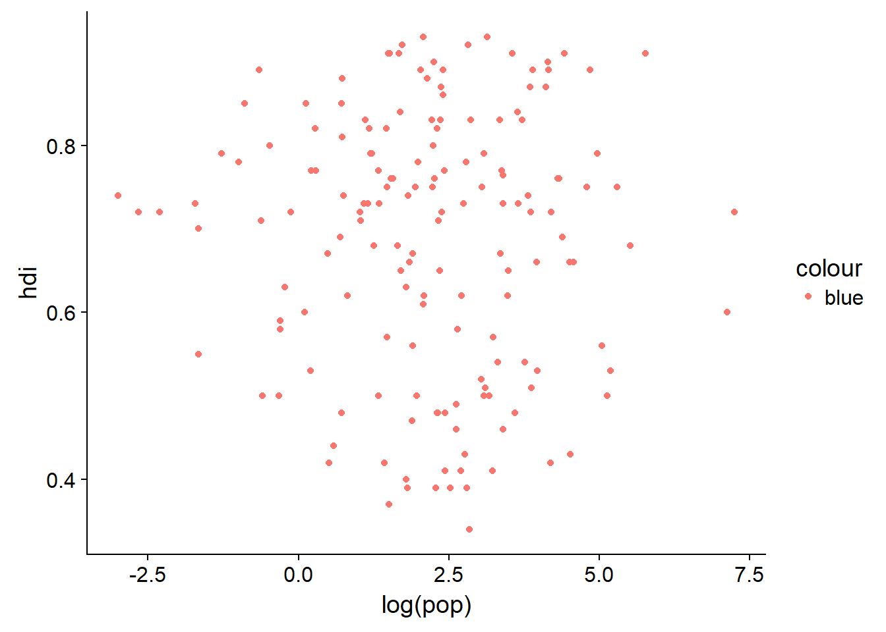 2. What happens if you map the same variable to multiple aesthetics? 3. What does the stroke aesthetic do? What shapes does it work with? (Hint: us
?geom_point)
Common problems
Two common problems that you will likely run into with ggplot2 are the one addressed in question 1 above and then the + sign. When adding layers to your plot you need to put the + at the end of the line, not the front. Remember that when you get stuck you can always just type ?function_name to pull up the help file associated with the function. When error messages that you don’t understand pop up you can also just copy those and Google - look for websites like [Stack Exchange] and [Cross Validated]. Those are great forums to get help on a particular topic. The chances of being the only person who has had to deal with a problem are pretty slim.
Facets
Things are about to get pretty cool. One way to add extra infomation to your plots is through the aes() functionality. But another way which is useful for categorical variables is to split your plot into facets, subplots which each display a subset of the data based on is assigned category. There are two facetting functions:
facet_wrap()which takes a variable (~ x) and plots it over the number of rows you specify.facet_grid()which takes two variables (y ~ x) and plots them on the y and x axes of the “meta-plot”.
ggplot(data = eco_foot) +
geom_point(mapping = aes(x = log(pop), y = hdi)) +
facet_wrap(~ region, nrow = 2)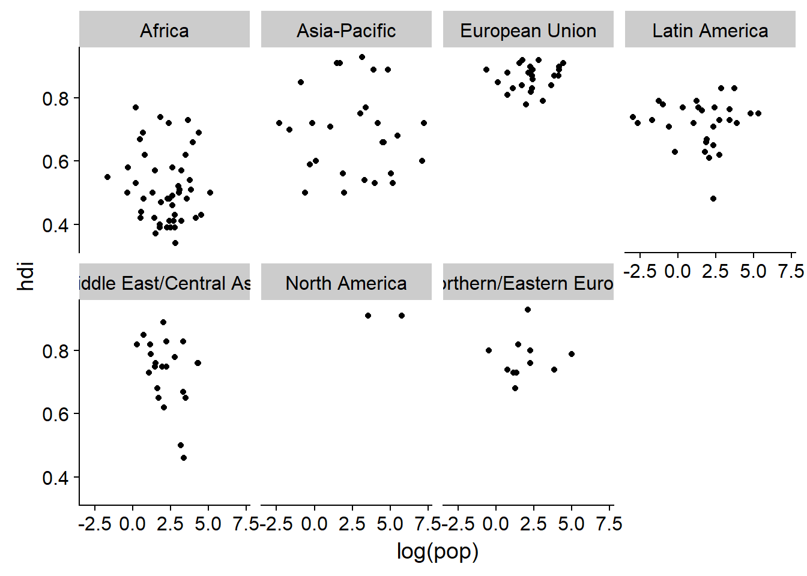
The ~ is an important character in R (and statistics). It means “is distributed by”. What we are essentially saying here is that we want our facets to be distributed by region on the “x-axis” but then wrap this over two rows (nrow = 2). We could do the oposite:
ggplot(data = eco_foot) +
geom_point(mapping = aes(x = log(pop), y = hdi)) +
facet_wrap(~ region, ncol = 2)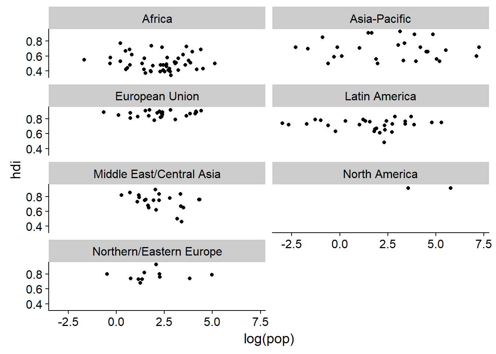
facet_grid() is very useful as well becuase it assigns specific variables to specific axes. When plotting one variable with facet_grid() we can produce a column of plots rather than a row:
ggplot(data = eco_foot) +
geom_point(mapping = aes(x = log(pop), y = hdi)) +
facet_grid(region ~ .)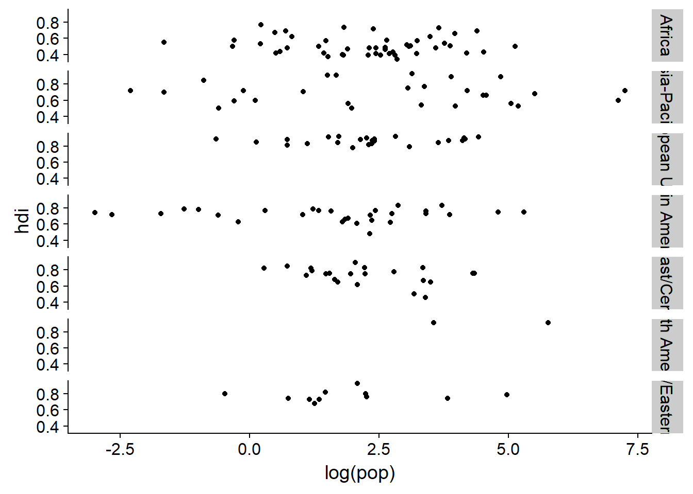
Or if we had another categorical variable we could make a plot matrix by replacing the . with the categorical variable in question. We need to have the . when we are only plotting one variable with facet_grid() because . is what R reads as “nothing” - empty space carries no power in R. Facets are a powerful tool to isolate data and see within variable trends more easily. But they can become distracting when you are facetting by many variables.
Geometric objects
How are these two plots similar?
plot.s <- ggplot(data = eco_foot) +
geom_point(mapping = aes(x = log(pop), y = hdi))
plot.l <- ggplot(data = eco_foot) +
geom_smooth(mapping = aes(x = log(pop), y = hdi))
plot_grid(plot.s, plot.l, labels = "AUTO")## `geom_smooth()` using method = 'loess'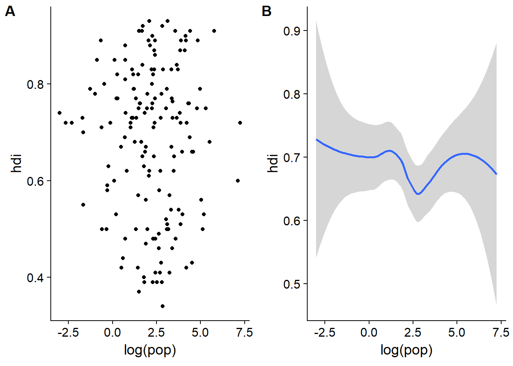
Both of them contain the same aesthetic mappings and both describe the same data but the plots are not identical. Each plot uses a different visual object to represent the data. In ggplot to language we would say that the two plots are using different geoms. A geom is the geometrical object which which ggplot uses to represent the data. We can refer to the type of plot we want to make by the plot’s geom function. For example, bar charts use bar geoms, line charts use line geoms, and boxplots use, well, boxplot geoms. Scatterplots and regressions seem to breat this trend, they use point and smooth geoms. In order to change the way ggplot plots the figure all we need to do is geom_changeThisText(). So for the left figure I used geom_point() and for the one on the right I used geom_smooth().
Every geom funciton in ggplot2 takes a mapping function, however, these mapping functions might not be consistent across every geom. For example we could tell geom_smooth() to change the line type based on a particular categorical variable but we can’t tell geom_point() to change its line type - that would be silly. But let’s do just that and test it out:
ggplot(data = eco_foot) +
geom_smooth(mapping = aes(x = log(pop), y = hdi, linetype = region), method = lm, se = FALSE)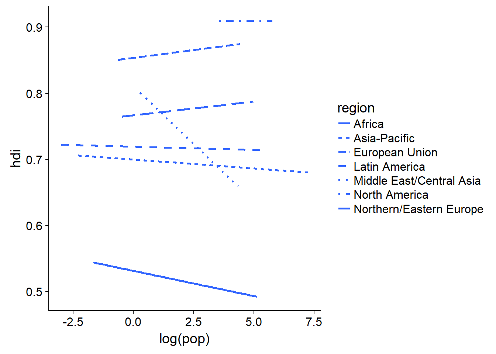
I have had to tweak the method and se arguments to make the figure a little more legible (I chaged the method from loess to lm which shifts the output from curved to straight lines. And then I removed the se - standard error band to make patterns clearer). But removing the standard error band has taken away a key component of the data - the variation around the lines. We can reintroduce that by plotting the original data points using geom_point(): 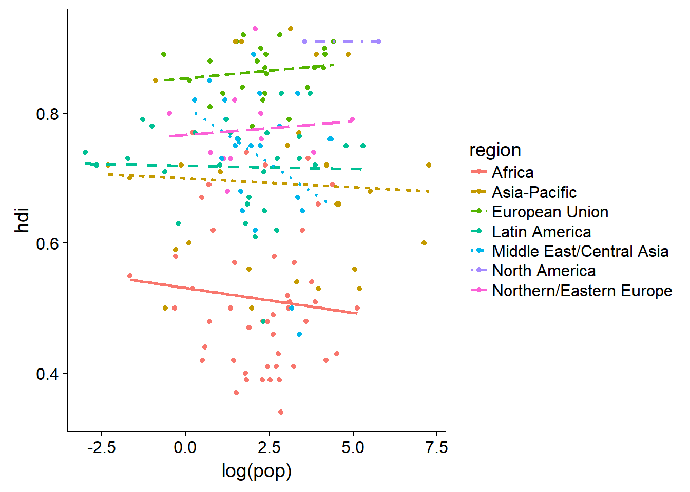 What we have just done is pretty impressive! We’ve instantaneously plotted two geoms in one graph with a legend that is beautifully formatted. Try doing that in Excel - you would be there for hours. If this is starting to get you excited then you better hold on because its about to get really neat.
ggplot2 provides over 30 geoms and that’s not including the unofficial ones. A good place to get an overview of the ggplot2 functions is the cheatsheet. So on to the cool stuff. Suppose you want to plot multiple geoms in the same figure, all you do is add these to ggplot() and then you’re sorted:
ggplot(data = eco_foot) +
geom_point(mapping = aes(x = log(pop), y = hdi)) +
geom_smooth(mapping = aes(x = log(pop), y = hdi))## `geom_smooth()` using method = 'loess'
But writing this out can be quite repetitive, especially if there are multiple geoms plotting the same aesthetics. What’s worse is if you want to change the axes that we are plotting on you would need to make four changes to your code. A neat way to get around this is to pass a set of aesthetic mappings to ggplot(). ggplot2 will treat these mappings as global mappings which apply to each geom in your plot. In other words, this code will produce the same figure as the previous code:
ggplot(data = eco_foot, mapping = aes(x = log(pop), y = hdi)) +
geom_point() +
geom_smooth()## `geom_smooth()` using method = 'loess'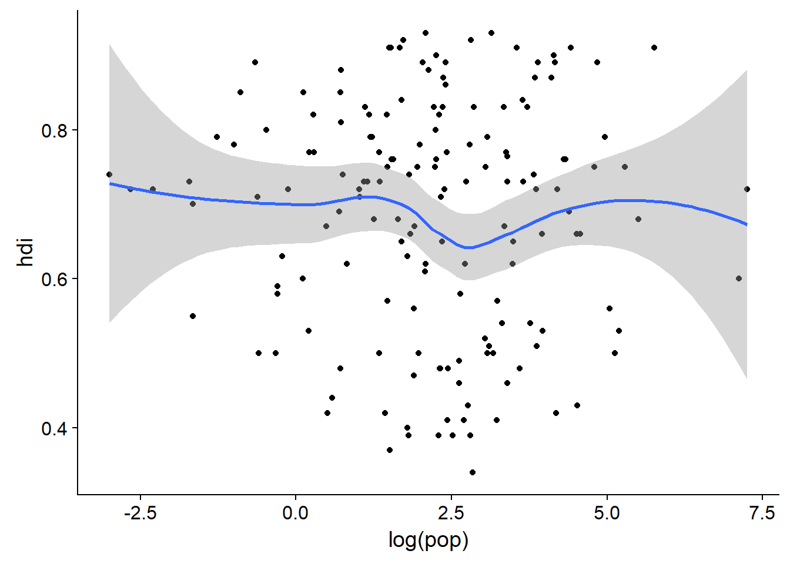
You can then add local mappings specific to a particular geom by including them within the aes() for that geom. This makes it possible to display differnet aesthetics in different layers.
ggplot(data = eco_foot, mapping = aes(x = log(pop), y = hdi)) +
geom_point(mapping = aes(colour = region)) +
geom_smooth()## `geom_smooth()` using method = 'loess'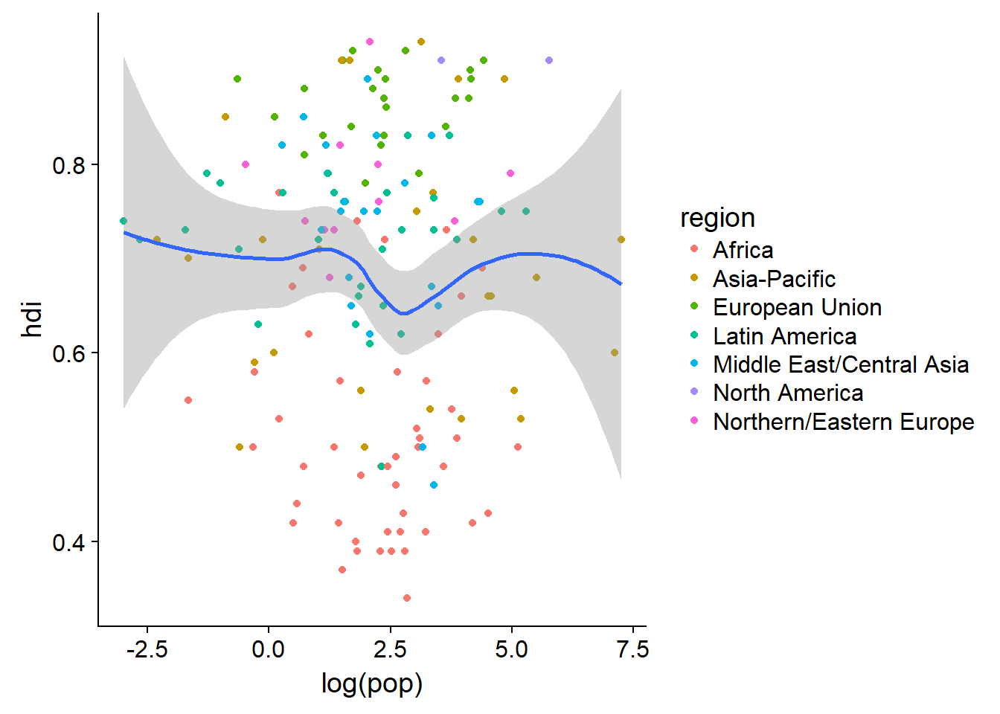
This can go another step further where different data sources can be used for different geoms. This next plot contains all the data in geom_point() but the regression line is only made up of Middle East and Central Asian countries which we can extract from eco_foot using filter() from dplyr:
ggplot(data = eco_foot, mapping = aes(x = log(pop), y = hdi)) +
geom_point(mapping = aes(colour = region)) +
geom_smooth(data = filter(eco_foot, region == "Middle East/Central Asia"), method = lm, se = FALSE)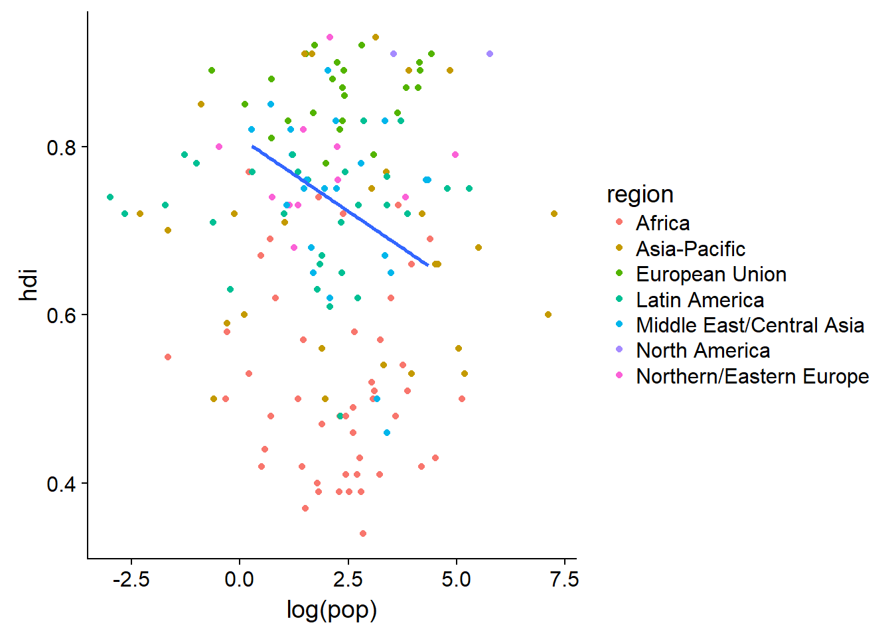
Position adjustments
One of the most dangerous things about graphs is that it is so easy to loose data underneath other data - a situation known as overplotting. This happens when there are many data points which have the same value so the just get put on top of one another - what looks like one data point might in fact be 20! This figure shows the relationship between the engine size of a car (displ) and the fuel efficiency at highway speeds (hwy). On the left is the figure with some serious overplotting and on the right is the same data but with a jitter addjustment assigned to the position of each point:
plot.over <- ggplot(data = mpg) +
geom_point(mapping = aes(x = displ, y = hwy))
plot.jittered <-ggplot(data = mpg) +
geom_point(mapping = aes(x = displ, y = hwy), position = "jitter")
plot_grid(plot.over, plot.jittered, labels = "AUTO")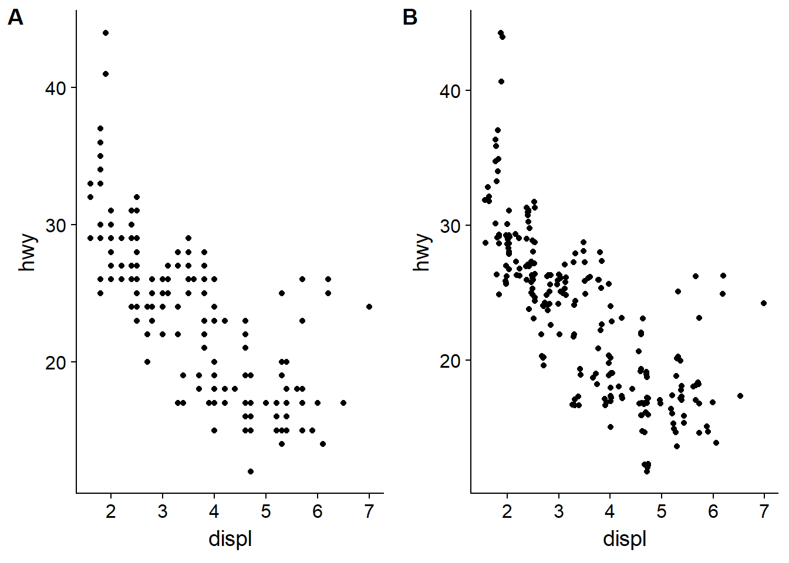
How this works is that the adjustment to the position argument tells the geom to add random noise to each of the points. You might gasp and say that you are distorting the data and yes, that is true. But you are only doing that at very tiny scales and in return you are getting much more data out of your plot! Seems like a fair trade-off. There are several other position adjustments that you can apply. Check out ?position_dodge, ?position_fill, ?position_identity, ?position_jitter, and ?position_stack to see how these all work.
There is obviously much much more to all of this but that is a fairly thorough introduction for now. Next up we’ll be doing some real work - statistics.